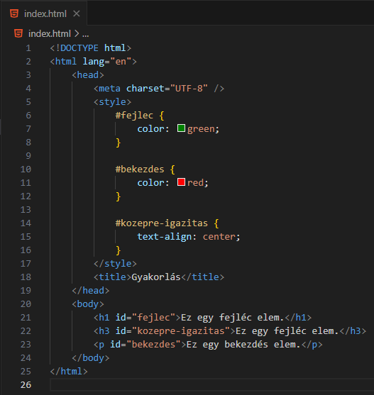

-
Mit kell alapból tudni az attribútumokról?
-
A HTML attribútumok további információkat
nyújtanak a HTML elemekről.
- Minden HTML-elemnek lehetnek attribútumai.
-
Az attribútumok további információkat nyújtanak
az elemekről. Tehát specializálják.
-
Az attribútumok mindig a kezdő címkében vannak
megadva.
-
Az attribútumok általában név/érték párban
érkeznek, például: név="érték".
-
Ezekkel az attribútumokkal már foglalkoztunk:
-lang (html-elem)
-charset
(meta-elem)
-href (a-elem)
-target
(a-elem)
-src (img-elem)
-alt
(img-elem)
-width (img-elem)
-height
(img-elem)
-cite (blockquote-elem)
-colspan (th-elem)
-rowspan
(th-elem)
és még egy párral...
- Látható, hogy jó sok van.
-
Forrás:
w3schools
-
Mit kell tudni a következő attribútumról: title?

-
A title-attribútummal már jópárszor
találkoztunk.
-
Ez az attribútum a beleírt szöveget egy kis
felugró ablakban (tooltip) jeleníti meg, ha az
egeret ráhúzzuk az elemre a böngészőben.
-
Mit kell tudni a következő attribútumról: style?
-
A style-attribútummal is már jópárszor
találkoztunk.
-
Ez az attribútum lehetőséget biztosít, hogy egy
HTML-elem teljes stílusát megváltoztassuk.
-
Úgynevezett beágyazott stílus (inline style)
tárolására szolgál.
-
Mit kell tudni a következő attribútumról: class?
- EZ A KÉT LEGFONTOSABB ATTRIBÚTUM EGYIKE!
-
Bármely HTML-elemnek lehetnek ilyen
attribútumai. Abban az esetben, ha egy elem több
értéket is használ, akkor az ÉRTÉKEKET SZÓKÖZZEL
VÁLASZTJUK EL.
-
UGYANAZT A CLASS-ÉRTÉKET TÖBB ELEM IS
HASZNÁLHATJA!
-
A CSS és a JavaScript fogja intenzíven használni
őket.
- A CSS-ben .ertek-formában hivatkozunk rá.
- Kis- és nagybatű érzékeny: alma ≠ ALMA
-
Forrás:
w3schools
-
Mit kell tudni a következő attribútumról: id?

- EZ A KÉT LEGFONTOSABB ATTRIBÚTUM EGYIKE!
-
Bármely HTML-elemnek lehetnek ilyen
attribútumai. DE EGYSZERRE CSAK EGY!
- EGY ID-ÉRTÉKET CSAK EGY ELEM IS HASZNÁLHAT!
-
A CSS és a JavaScript fogja intenzíven használni
őket.
- A CSS-ben #ertek-formában hivatkozunk rá.
- Kis- és nagybatű érzékeny: alma ≠ ALMA
-
Forrás:
w3schools